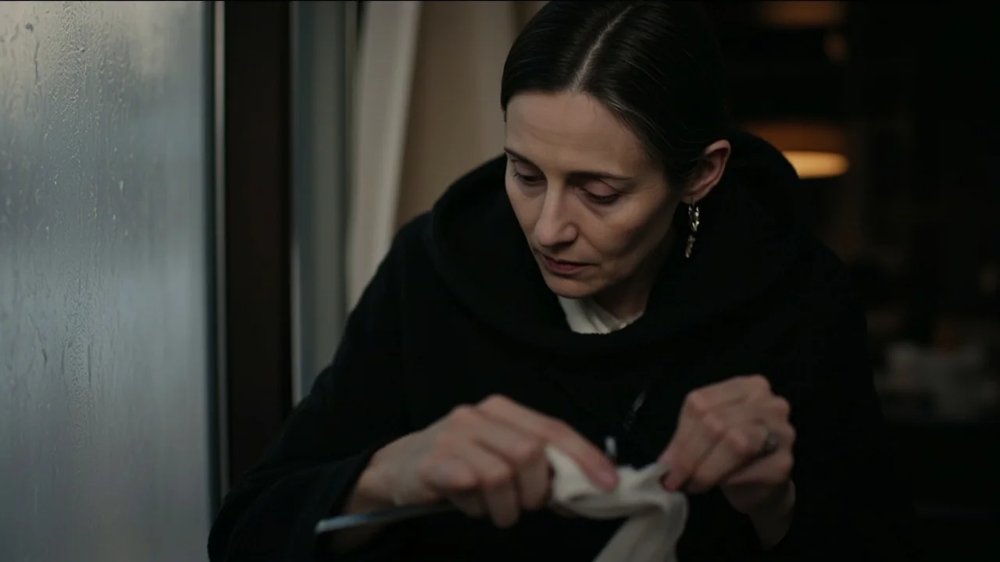
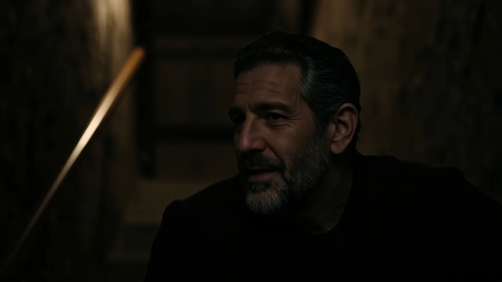
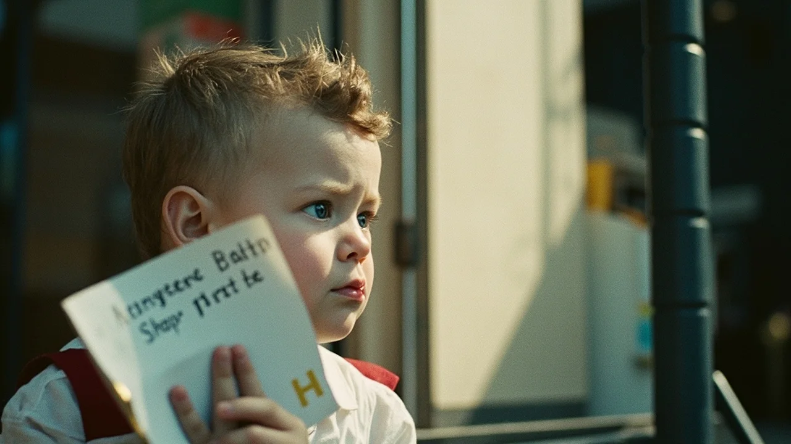
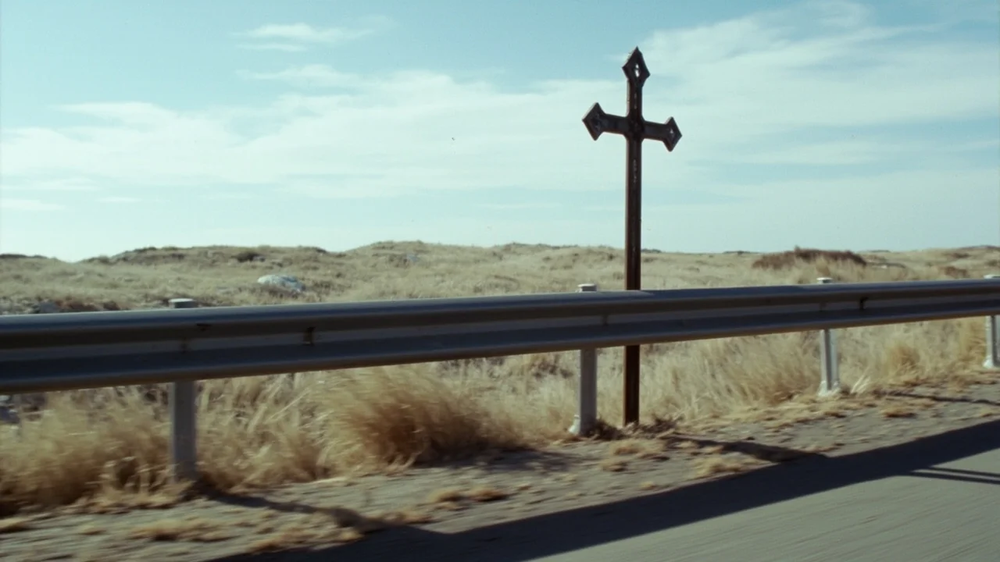
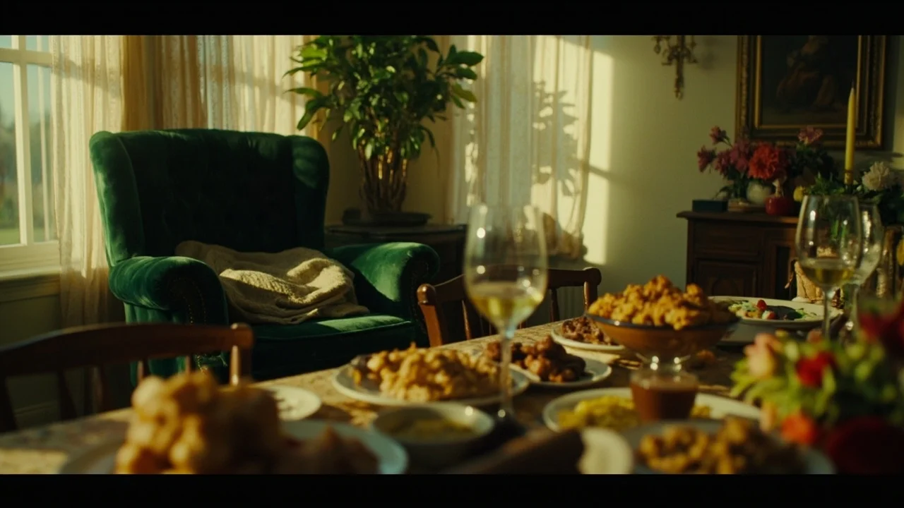

El mantel de hilo blanco con acebo bordado solo salía del aparador una noche al año. Laura alisó el tejido con la palma de la mano contra el roble y dispuso cuatro platos de porcelana, cuatro copas de cristal tallado y cuatro juegos de cubiertos de plata.
Al llegar al cuarto servicio, junto a la ventana batida por la escarcha, se detuvo. Ajustó el tenedor para que quedase paralelo a la servilleta y arrastró la silla de respaldo tapizado en terciopelo verde hasta encajarla frente al plato. Nadie se sentaría allí, pero el servicio relucía como si la sopa fuese a servirse de inmediato.
En el quicio de la cocina, Miguel la observaba con un trapo entre las manos y el ceño fruncido de cansancio.
—Laura —dijo con voz templada—. Si quieres, dejamos esa silla en el rincón. Nadie va a pensar que nos hemos olvidado de Marcos si no ponemos el servicio completo.
Laura no levantó la vista. Con la yema del pulgar limpió una mota invisible del borde dorado de la loza.
—No es por los demás, Miguel. Es su sitio. Si quitamos la silla, es como aceptar que aquí ya no queda nada de él.
—Hace tres años, Laura.
—Y harán diez —sentenció ella, irguiéndose despacio. Tenía cuarenta y cuatro años, pero el invierno parecía haberle endurecido los tendones del cuello hasta dejarle una rigidez de piedra—. Mientras yo ponga esta mesa, mi hijo tendrá su plato. Si a ti te pesa la conciencia por sentarte a cenar con normalidad, ese no es mi problema.
Miguel soltó un suspiro amargo y calló. En aquella casa, cualquier objeción equivalía a una traición.
Un golpe seco en la cancela anunció la llegada de Irene. La chica empujó la puerta con la cadera, sacudiéndose la llovizna fría de la capucha de su sudadera granate. Tenía catorce años, hombros delgados y una mirada hosca que rehuía la de su madre. Dejó una carpeta azul sobre el aparador.
—He traído las notas —dijo, frotándose las manos coloradas—. En dibujo tengo la mejor lámina del curso. Y en biología, un nueve y medio.
Laura pasó junto a ella llevando una bandeja de copas sin detener el paso.

—Muy bien, Irene. Sube a cambiarte esas zapatillas antes de manchar la tarima. Y búscame la cinta de villancicos del coro. Estará en el mueble de la televisión. Marcos siempre la ponía mientras horneaba los mazapanes.
Irene se quedó inmóvil. Un charquito diminuto comenzó a formarse bajo su suela mojada.
—No quiero buscar esa cinta, mamá. Está vieja, chirría y nos la sabemos de memoria.
Laura se detuvo con las botellas en la mano y la miró con fijeza desprovista de ternura.
—Era la costumbre de tu hermano.
—Marcos murió, mamá. Murió en aquella curva cuando yo tenía once años y tú todavía me trenzabas el pelo antes de ir a clase.
El silencio cayó sobre la estancia con el peso de una losa. Miguel asomó desde la cocina, pálido, pero antes de que pudiera mediar, Laura acortó la distancia en dos zancadas.
La bofetada fue un chasquido seco. La mejilla izquierda de Irene ardió en un carmín violento. La muchacha no gritó ni se cubrió el rostro; permaneció rígida, clavando en su madre unos ojos tan fríos y cargados de desprecio que a Laura se le cortó el aliento.
Durante tres segundos interminables, la mujer contempló la palma de su mano abierta, temblando con un espasmo ajeno.
—Irene… —susurró, retrocediendo medio paso.
Irene no esperó. Dio media vuelta, subió las escaleras de dos en dos y cerró la puerta de su cuarto de un portazo. El pestillo metálico encajó con un chasquido tajante.
La cena de Nochebuena no se celebró. El asado se enfrió en la fuente de barro, cubriéndose de grasa blanca. A las once de la noche, Miguel subió a la buhardilla y encontró a Laura sentada en el suelo del dormitorio de Marcos.

La habitación olía a madera encerada y a papel cerrado. Todo seguía igual que la tarde del accidente: los libros apilados, los pósteres gastados y la cazadora vaquera sobre el respaldo de la silla giratoria. Laura estaba encogida contra el armario, con las rodillas pegadas al pecho y la rebeca gris apretada sobre el regazo.
—No debí pegarle —dijo al aire, con los ojos fijos en la tarima—. Pero habló de Marcos como si no le importase. Como si quisiera borrarlo para no acordarse más.
Miguel se agachó a su lado, sintiendo el crujido cansado de sus rodillas. Apoyó una mano firme sobre el hombro de su esposa.
—Irene no quiere borrarlo, Laura. Lo que quiere es que la mires a ella sin buscar a Marcos detrás de sus ojos. Saca notas brillantes, se pasa las tardes dibujando sola para no molestar y tú no has ido a verla a una función porque siempre coincide con una misa o un aniversario.
—Cuidar de lo suyo es lo único que me queda —sollozó ella, cerrando los párpados con fuerza—. Si quito su plato, si guardo sus cosas en cajas, Marcos desaparece. Se muere otra vez, Miguel.
—Marcos no vive en un plato vacío, Laura. Ni en un cuarto cerrado donde no corre el aire desde hace tres años. Marcos se fue, y la que se nos está apagando de rabia y de frío en el piso de abajo es Irene. Si seguimos así, el año que viene pondrás dos platos vacíos porque ella se marchará en cuanto pueda y no volverá jamás.
Miguel se incorporó despacio y salió al pasillo, dejando la puerta entornada.
Sola en la penumbra, Laura apoyó la sien contra la puerta del armario mientras las lágrimas le resbalaban calientes por las mejillas.
Al intentar incorporarse, el borde de su falda tropezó con una caja bajo la cama. Al desequilibrarse, golpeó el cajón inferior del escritorio, que cedió con un crujido largo. Dentro no había ropa ni trofeos, sino un cuaderno escolar de tapas negras con la espiral de alambre torcida.
Laura lo tomó con cautela. Era el cuaderno que Marcos usaba en sus últimos meses para esquemas y problemas de física. Pasó las hojas con lentitud: la caligrafía apresurada, los borrones de tinta azul, las caricaturas en los márgenes. Hacia la mitad, una cuartilla doblada en cuatro partes asomó entre dos páginas. Laura la desdobló sobre su regazo. Arriba, escrito con mayúsculas torpes y subrayado en rojo, se leía: *«Cosas que tengo que hacer con el bicho antes de irme a la universidad»*.
Un nudo le atenazó la garganta. «El bicho» era el apodo con el que Marcos llamaba a Irene desde pequeña.
Debajo, la lista desgranaba cinco puntos con letra urgente:

1. *Enseñarle a cambiar la cadena de la bici vieja sin pillarse los dedos con el piñón.* 2. *Llevarla a ver las luces de Navidad de la plaza el veinticuatro y comprarle chocolate con churros (a mamá no le gusta el dulce antes de cenar, así que no se lo decimos).* 3. *Ahorrar con las clases particulares para regalarle la cámara compacta de segunda mano que vio en la calle Ancha.* 4. *Hacerla cantar villancicos inventándose la letra hasta que le dé un ataque de risa en la cocina.* 5. *Hacerle entender que los de su clase son idiotas y que si alguno se pasa solo tiene que avisarme.*
Al pie de la hoja, separado por una raya trazada a bolígrafo, había un párrafo añadido tiempo después:
*«Irene cree que soy un pesado, pero me da miedo que cuando me vaya a estudiar fuera se sienta sola en una casa tan grande. Cuando sea mayor, quiero que mi hermana recuerde que conmigo siempre podía hacer cualquier cosa, sobre todo reírse cuando las cosas van torcidas».*
El papel temblaba entre los dedos de Laura.
Miró alrededor: la colcha estirada sin una mota de polvo, las cortinas cerradas para proteger las fotos, el silencio sepulcral que gobernaba la vivienda desde hacía tres inviernos. Había levantado un templo estéril creyendo honrar a su muchacho muerto, y en aquellas líneas arrugadas Marcos le dejaba una orden incontestable: lo que él más amaba en el mundo no era una vajilla intacta, sino la risa viva de su hermana pequeña manchada de chocolate.
Un llanto limpio, contenido durante mil noches, brotó del pecho de Laura. Se apretó la hoja contra el corazón y lloró en la penumbra hasta quedarse vacía.
La mañana de Navidad despertó luminosa y fría. El sol derretía la escarcha de los tejados en regueros transparentes.
Laura se lavó la cara con agua helada, se recogió el pelo en una trenza baja y subió las escaleras. Se detuvo ante el dormitorio de Irene y llamó con dos toques suaves.
—Irene —dijo a través de la madera—. Abre, por favor.
El pestillo tardó unos segundos en ceder. La puerta se abrió unos palmos. Irene la miraba con los ojos hinchados de vigilia, la sudadera granate puesta y los brazos cruzados en guardia. La marca roja de su pómulo casi se había borrado.
Laura mantuvo las manos quietas a los costados y la miró de frente.
—Ayer te pegué —dijo, sin buscar justificaciones—. No hay excusa para lo que hice. Llevo tres años haciéndote sentir invisible, exigiéndote un luto que no te tocaba mientras cuidaba de una habitación vacía. Te pido perdón, Irene. No sé si podrás perdonarme hoy, pero tenía que decírtelo mirándote a los ojos.

La muchacha se quedó petrificada. Había preparado silencios duros durante toda la noche, pero la humilde verdad de su madre la desarmó. La dureza de su mirada se quebró en un parpadeo húmedo.
—Pensé que me odiabas —susurró Irene con la voz rota—. Pensé que cada vez que me mirabas deseabas que me hubiera muerto yo en su lugar.
—¡No, mi vida, jamás! —exclamó Laura, y dio un paso adelante para estrecharla entre sus brazos.
Irene tardó apenas un segundo en derrumbarse contra el hombro de su madre, llorando con un desahogo acumulado durante meses. Laura la abrazó con fuerza, acariciándole el pelo corto, sintiendo el calor real y el pulso agitado de su hija viva.
—Ponte el abrigo y las botas —le susurró Laura al oído, secándole las lágrimas con las yemas—. Tu padre y yo te esperamos abajo. Tenemos que ir a un sitio.
La furgoneta aparcó en el arcén de la carretera comarcal, donde una curva cerrada bordeaba un barranco de encinas y caliza. El asfalto lucía seco bajo el sol de mediodía.
Junto al quitamiedos metálico se alzaba la cruz de hierro forjado que Miguel había colocado dos inviernos atrás. Laura bajó con una pequeña rama de acebo en la mano y el cuaderno escolar bajo el brazo. Irene caminaba a su lado, con las manos metidas en los bolsillos del chaquetón y la vista clavada en la gravilla.
Laura se arrodilló junto a la cruz, depositó la rama verde entre las piedras y rozó el metal frío sin rigidez.
—Era un desastre con las herramientas —dijo de pronto con una media sonrisa melancólica—. ¿Te acuerdas, Miguel? Cuando quiso arreglar la persiana de su cuarto y se le vinieron los listones encima. Estuvo tres días jurando que el carpintero le había vendido madera maldita.
Miguel soltó una carcajada ronca detrás de ellas.
—Y cuando cocinaba —añadió el padre—. Le echaba orégano hasta a las natillas y luego se enfadaba si Irene no se las comía.
Irene alzó la mirada, asombrada de oír hablar de su hermano como de un chico torpe y real, y no como de una efigie intocable. Una sonrisa tímida asomó en sus labios.

—Una vez me escondió la cartera del colegio encima del armario del baño porque decía que tardaba mucho en peinarme —recordó la niña—. Me dejó una nota cobrándome diez céntimos de rescate.
Laura se volvió hacia ella, le tomó la mano y le apretó los dedos con ternura.
—Marcos era impaciente, gritón y a veces insufrible. Pero te quería con locura, Irene. Mucho más de lo que yo he sabido demostrártelo este tiempo.
Laura abrió el cuaderno, arrancó la cuartilla de las tareas pendientes y se la tendió a su hija. Irene leyó la lista en silencio. Al llegar al último párrafo, las lágrimas volvieron a brotarle, pero eran lágrimas tibias, de un alivio inmenso. Dobló el papel con esmero y se lo guardó en el bolsillo interior del abrigo, junto al pecho.
Al regresar a la casa, el salón olía a leña de encina recién prendida.
Laura se acercó a la mesa del comedor. Con ademán pausado y sin solemnidad fúnebre, recogió el plato de porcelana, la copa y los cubiertos del cuarto servicio y los guardó en el aparador. Después tomó la silla de terciopelo verde y la empujó hacia el rincón del salón, junto al ventanal donde la luz de la tarde entraba a chorros sobre la tarima.
Sobre la repisa de la chimenea colocó la fotografía enmarcada de Marcos sonriendo en la playa, junto al acebo y una vela encendida.
—Hoy comemos los tres en la mesa —anunció Laura, mirándolos con las mangas de la camisa remangadas—. Y esta tarde nos vamos al centro. Hay un puesto de churros en la esquina de la calle Ancha que no podemos pasar por alto.
Irene sonrió desde el sofá, encogiéndose de hombros.
—Y tenemos que mirar un escaparate de cámaras de fotos —dijo la muchacha.
—Y miraremos el escaparate —asintió Laura, y por primera vez en tres años, su sonrisa no le debía nada a la culpa.
La silla vacía se quedó en el rincón del salón, formando parte de la casa como un mueble querido y en paz, pero la mesa quedó libre para los que todavía tenían hambre, voz y vida por compartir. Por fin, el tiempo volvió a correr hacia delante.